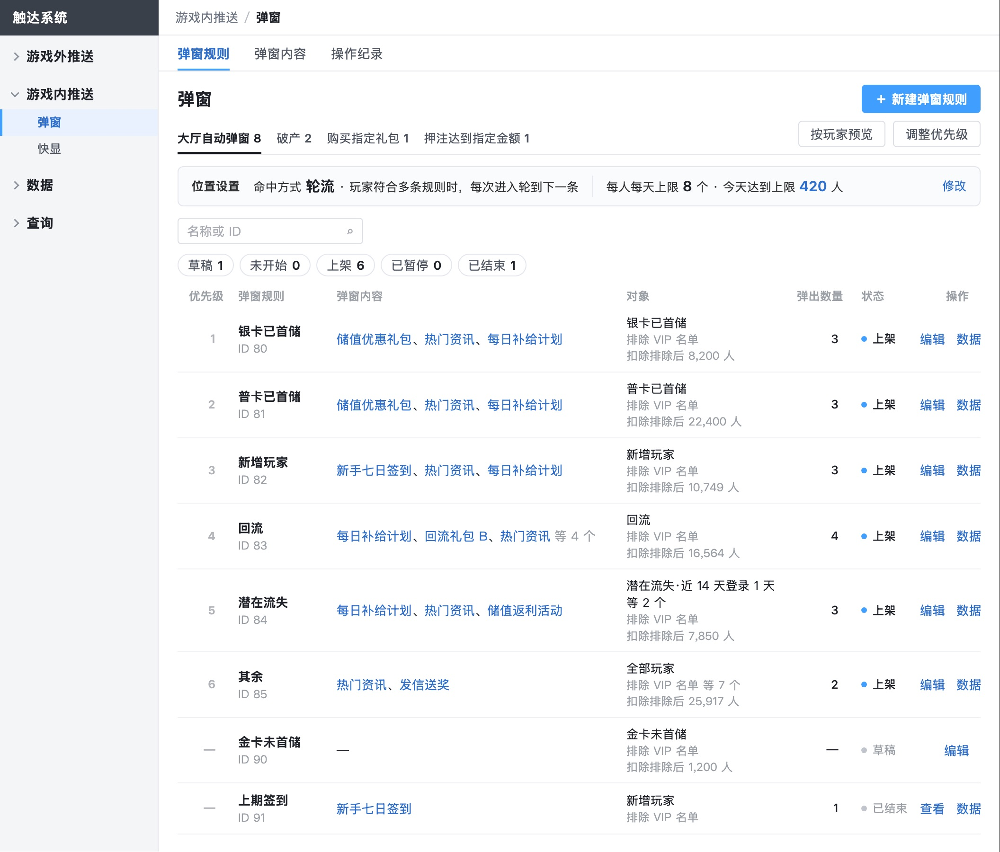
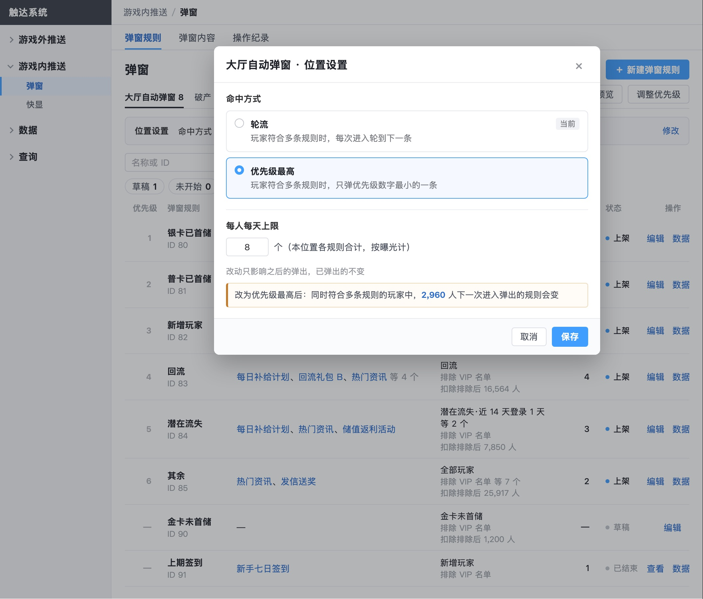

推送系统后台 · 需求评审版 · 2026-10-28
命中方式改成「位置设置」：列表上只读显示，点「修改」在对话框里改，改前写出影响
原来做成列表上方的切换按钮，看起来像筛选，点一下就对全部玩家生效。全稿同类的控件问题也一起改了。
01位置页签下一行只读显示这个位置的设置，命中方式和每人每天上限放在一起

弹窗规则列表：页签下一行是「位置设置」，右侧「修改」；原来顶部单独的大厅上限条已并进这一行
02点「修改」：单选加保存，每个选项一句说明，写明只影响之后的弹出和会影响多少人

位置设置对话框：改成「优先级最高」前，写出同时符合多条规则的玩家里有多少人下一次弹出的规则会变
- 依据：Google Ad Manager 的轮换设置放在投放项自己的设置页里，点编辑改，每个选项配说明、写明只影响之后的投放；IBM Carbon 规范要确认的设置用单选加保存，不用即点即生效的切换。
- 依据我们 10/28 定的原则：做决定的那一刻看到后果；一件事只设一次。「将影响 N 人」业界官方文档里没见到，是按这条原则多做的。
03按「控件样子要和作用一致」查了全稿，同类的一起改了
- 调整优先级、修改上限：保存前也写出影响。
- 每人每天上限原来有四种写法，统一叫法；「今天达到上限 N 人」能点进去看是谁。
- 短信、快显列表上方的「全部｜定时｜条件触发」分段筛选去掉（列表已经分好段）；新建页「满足任一｜同时满足」从分段控件改成单选钮。
- 状态（上架、生效中）原来是链接蓝，像按钮，改成状态样式；发布后不能改的（弹窗位置、发送方式、消息类别）显示成只读文字。
- 快显重复定时行上第一个操作改成「暂停」，「停止」收进更多操作；按钮统一叫「发送测试」。
以上改完后，由没参与修改的设计评审逐张复核，确信问题清零。
成品：评审版_定稿改_1027/推送系统后台集成需求/3_原型_需求评审版.html（30 张图，第 4 页弹窗）